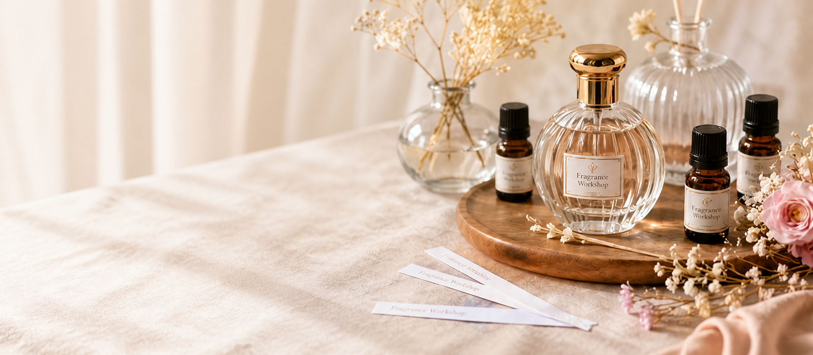
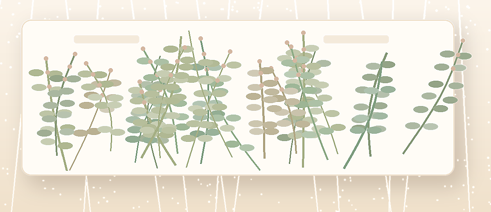

香りのアンケート
前半は香り・色・気分・使いたいシーンを、直感で答えられる質問だけで進みます。

前半は香り・色・気分・使いたいシーンを、直感で答えられる質問だけで進みます。

回答傾向に合わせて、当日に試す香りのベースを作ります。
回答内容は決定結果ではなく、当日スタッフと一緒に完成させます。

丁寧にサポートするので、香りが苦手な方でも安心です。
あなたの傾向に合わせた香りの方向性をご提案します。
レシピやメモをいつでも確認でき、リピートもスムーズです。
スタッフが一緒に進めます。
ワークショップは予約枠に合わせて進行します。
完成品情報をもとに確認できます。
東京都台東区東上野3-15-5 曽我ビル3F